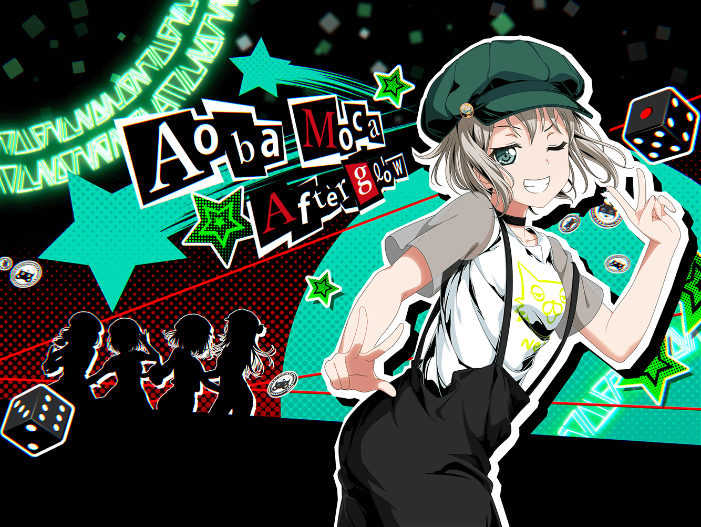

放課後
羽丘女子学園 1-B教室
モカ
ここでモカちゃんがドーンと出てきて……
それからー……
つぐみ
モカちゃん、何書いてるの？
モカ
よくぞ聞いてくれました～。
今あたしは、この前の怪盗団の記録を
残しているのです～
つぐみ
そうだったんだ！
でもどうして？
モカ
それはもちろん、今回の出来事を
いつかマンガにするためだよ～
つぐみ
も、モカちゃん……！
マンガのこと、覚えててくれたんだ！
モカ
あたりまえじゃーん。
モカちゃんをなめないでほしーなー
つぐみ
えへへ、嬉しいな！
そうだ、私もそのノート見てもいい？
モカ
もちろん。
ていうか、つぐに見てほしいと
思ってたんだよねー
つぐみ
ホントっ！？
ありがとー！
モカ
ちょっと話を盛ったところもあるから、
気になったら教えてねー
つぐみ
わ、わかった！
それじゃあ読んでみるね……
つぐみ
えーと……『弦巻家に侵入しようとする五人。
侵入経路を探す５人を、人語を話す黒猫が導く』
……さ、さっそく盛られてる！？
モカ
いやー、マンガにするなら、こうしたほうが
インパクトあるかなーって
つぐみ
そ、それは確かに……
えーと次は……
つぐみ
うんうん、しばらくは普通だね……
あ、ここから違う……
つぐみ
『仲間を置いて進む３人は、とある部屋を見つける。
そこは一面が青く染まった部屋で、謎の老人がいた……』
じゅ、重要人物っぽい！
モカ
ぽいよね～。
まあ出しただけなんだけど
つぐみ
ええっ！？
な、何も考えてないのっ！？
モカ
あははー、まあまあ。
それはこの後考えるって～
つぐみ
わ、わかった……
あ、ここが最後のページだ。
『変身したこころ、５人は絶体絶命の危機にーー』
つぐみ
こころちゃんが変身しちゃったよ！？
モカ
いやいやー、このくらいやらないと、
読者の心は掴めないよ～？
つぐみ
そ、そうなのかな……？
ていうか絶体絶命の危機、で終わっちゃってるけど……
モカ
そうなんだよね～。だからつぐに読んでほしかったんだ。
アドバイスが欲しくって。
一応続きは考えてあるんだけどさー
つぐみ
そうなの？
モカ
うん、２つ案があってさー。
どっちがいいか選んでよー
つぐみ
わ、わかった！
モカ
まず１つ目が、『そこでモカちゃんに秘められた血が覚醒する。
実はモカちゃんは魔法少女だったのだ！』ってパターンとー
つぐみ
ま、魔法少女再び……
モカ
もう１つが『内なるもう一人の自分の存在に気づき、
モカちゃんが覚醒する！』……ってパターン
つぐみ
う、内なるもう一人の自分……？
モカ
さー、つぐ。
どっちにする～？
つぐみ
（ど、どうしよう……
……っていうかどっちもあんまり変わらない……）
モカ
あ、もしくはー。
つぐも、あたしと一緒に続きを考えてよー
つぐみ
う、うんっ！
私もそれがいいと思う！
モカ
よかったー。
それじゃー、モカちゃんが魔法少女に変身したところからねー。
はい、じゃあ続きをつぐ、どうぞ！
つぐみ
ま、魔法少女になるのは決定なの！？
モカ
あははー。
それじゃあ、つぐが魔法少女になるのでもいいよー？
モカ
それともスーパーつぐがいいー？
つぐみ
そ、そういうことじゃなくって！